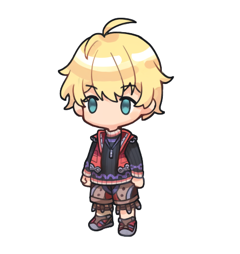
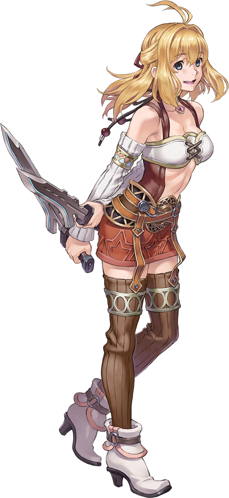
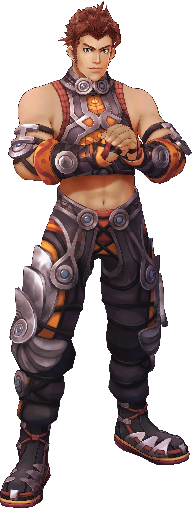
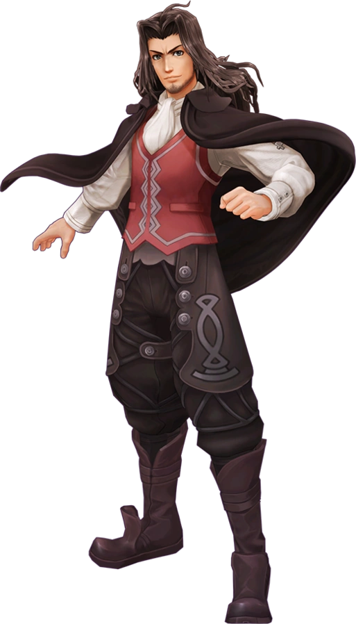

Shulk (Japanese: シュルク, Shuruku;) is the main playable character and the protagonist of Xenoblade Chronicles. His ability to wield the Monado, using the sword's unique powers, as well as visions of the future, makes him one of the main forces against the Mechon. He is often referred to by some characters as the "Heir to the Monado". |
 |
|  | Fiora (Japanese: フィオルン, Fiorun, Fiorung;) is one of the seven playable characters in Xenoblade Chronicles. She is a childhood friend of Shulk and Reyn, and is the younger sister of Dunban with whom she lives in his house in Colony 9. She has a soft spot for Shulk and often cooks for him, for which he is grateful. She becomes playable during Chapter 1 alongside Shulk and Reyn. |
Reyn (Japanese: ライン, Rain, Rein; English dub: /ˈraɪn/) is one of the seven playable characters in Xenoblade Chronicles and one of Shulk's childhood friends. He is the second character introduced into the game after Shulk. Although he is a member of Colony 9's Defence Force, he can often be seen at Shulk and Fiora's side. |
 |
|  | Dunban (Japanese: ダンバン, Danban;) is a Homs, and is one of the seven playable characters in Xenoblade Chronicles. Dunban serves as the voice of reason for the group, willing to kill a Homs in order to bring peace. Dunban owns a house in Colony 9 where he lives with his younger sister Fiora. Riki calls him "Dundun". He is initially playable in the Prologue and Chapter 2 as a guest character and he becomes permanently playable during Chapter 5.. |